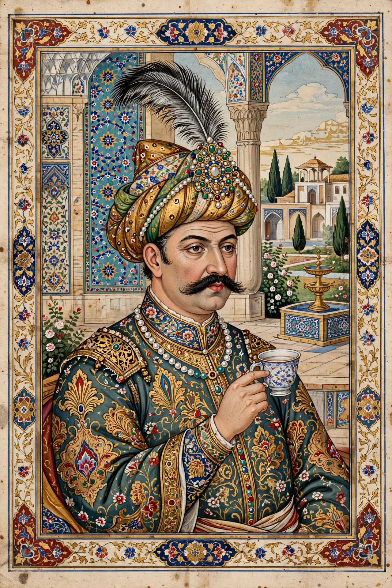

| Abbas I | |
|---|---|
 | |
| Shah of Iran | 1588 – 19 January 1629 |
| Born | 27 January 1571, Herat |
| Died | 19 January 1629 (aged 57), Mazandaran |
| Dynasty | Safavid |
| Father | Mohammad Khodabanda |
| Religion | Twelver Shia Islam |
Abbas I (Persian: شاه عباس بزرگ; 27 January 1571 – 19 January 1629), commonly known as Abbas the Great, was the fifth Safavid shah of Iran, reigning from 1588 until his death in 1629. He is generally considered the greatest ruler of the Safavid dynasty, under whom the empire reached the zenith of its political, military, economic and cultural power.
Abbas was the third son of Shah Mohammad Khodabanda. He came to the throne at the age of sixteen amid civil war among the Qizilbash factions and foreign invasion: the Ottomans had seized large territories in the northwest, including Tabriz, and the Uzbeks occupied much of Khorasan. To gain a free hand in the east, Abbas concluded the humiliating Treaty of Istanbul (1590), ceding territory to the Ottomans, but he used the breathing space to rebuild the state.
With the help of the English adventurer Robert Shirley and the able ghulam Allahverdi Khan, Abbas created a standing army — a corps of Georgian, Circassian and Armenian ghulams (slave-soldiers loyal to the shah), musketeers (tofangchi) and artillery — to counterbalance the tribal Qizilbash cavalry. He converted crown provinces (mamalik) into directly administered royal domains, increased revenue, encouraged trade (notably the silk trade, which he made a royal monopoly), and fostered diplomacy with European powers including England, the Dutch Republic and Spain.
From 1598 Abbas campaigned successfully against the Uzbeks, recovering Herat and Mashhad. In the Ottoman–Safavid War of 1603–1618 he retook Tabriz, Yerevan, and by 1605 had recovered all the territory lost in 1590, culminating in the Treaty of Serav (1618). In 1622 he captured Kandahar from the Mughals and, with English naval assistance, expelled the Portuguese from the island of Hormuz, renaming Bandar Abbas after himself. In 1623 he seized Baghdad and much of Mesopotamia, though his successors could not hold them permanently.
In 1598 Abbas moved his capital from Qazvin to Isfahan, which he rebuilt into one of the great cities of the early modern world. Around the vast new royal square, the Naqsh-e Jahan ("Image of the World"), rose the Shah Mosque, the Sheikh Lotfollah Mosque, the Ali Qapu palace and the entrance to the great bazaar. He forcibly resettled Armenians from Julfa to a new suburb, New Julfa, whose merchants became central to the silk trade. The city inspired the saying "Isfahan is half the world" (Esfahān nesf-e jahān).
Abbas combined administrative genius and personal accessibility — he was famous for walking incognito in Isfahan's bazaars — with ruthless cruelty toward his own family. Fearing usurpation, he killed his eldest son Safi Mirza in 1615 and blinded other sons, leaving the succession to his grandson Safi, a disastrous legacy for the dynasty. He died at his favourite residence in Mazandaran in January 1629.
See also: Safavid dynasty · Isfahan · Naqsh-e Jahan Square · Ismail I · Selim I